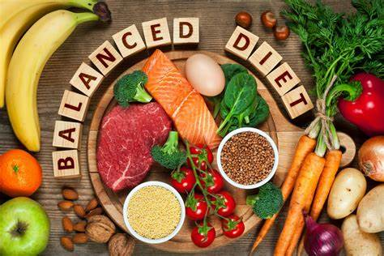
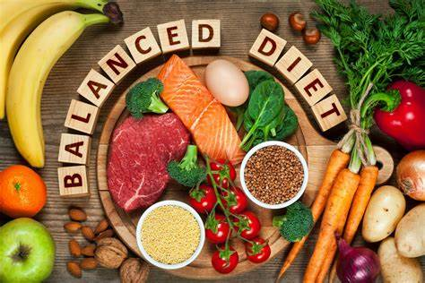

Bienvenido a Salud Integral
¡Bienvenido a Salud Integral! Somos tu plataforma confiable y completa para cuidar de tu bienestar. Aquí podrás acceder a una variedad de recursos diseñados para ayudarte a vivir de manera más saludable y equilibrada. Ofrecemos consejos diarios prácticos, artículos elaborados por expertos en salud y bienestar, videos educativos que te motivarán a adoptar hábitos positivos, y recomendaciones personalizadas adaptadas a tus necesidades. Nuestro objetivo es acompañarte en tu camino hacia una vida más plena, activa y saludable. Explora nuestro contenido y comienza hoy mismo a priorizar tu salud y bienestar en cada aspecto de tu vida.
Explorar más
.jpeg)
.jpeg) 

Registro de Usuario
Iniciar Sesión
Mi Perfil
Tips diarios
Artículos de Expertos
Manejo del Estrés
Técnicas efectivas para reducir el estrés y mejorar tu bienestar emocional.
Leer másHidratación y Salud
La importancia de mantenerse bien hidratado para optimizar funciones corporales.
Leer másHábitos de Vida Activos
Incorpora pequeñas actividades en tu rutina para mantenerte activo y saludable.
Leer másPrevención de Enfermedades
Medidas básicas para protegerte y prevenir enfermedades comunes.
Leer másMeditación y Relajación
Aprende técnicas de meditación para mejorar tu concentración y reducir el estrés.
Leer másEjercicios para mejorar la postura
Consejos y rutinas para mantener una postura saludable y evitar molestias.
Leer másAlimentación para la energía
Recomendaciones alimenticias para mantenerte activo y con energía durante todo el día.
Leer másEjercicios de respiración
Prácticas sencillas para mejorar tu respiración y reducir la ansiedad.
Leer más🎥 Videos Recomendados de Salud Integral
Explora videos sobre bienestar físico, nutrición y salud mental para complementar tu aprendizaje.
Rutina básica para principiantes
Consejos de alimentación saludable
Meditación guiada para reducir el estrés
Ejercicios de estiramiento matutino
Recetas fáciles y saludables
Yoga para reducir el estrés
Tips para mejorar tu sueño
Rutina de cardio en casa
Técnicas de relajación para el día a día
Explora Más Recursos
Encuentra herramientas y artículos adicionales sobre salud integral.